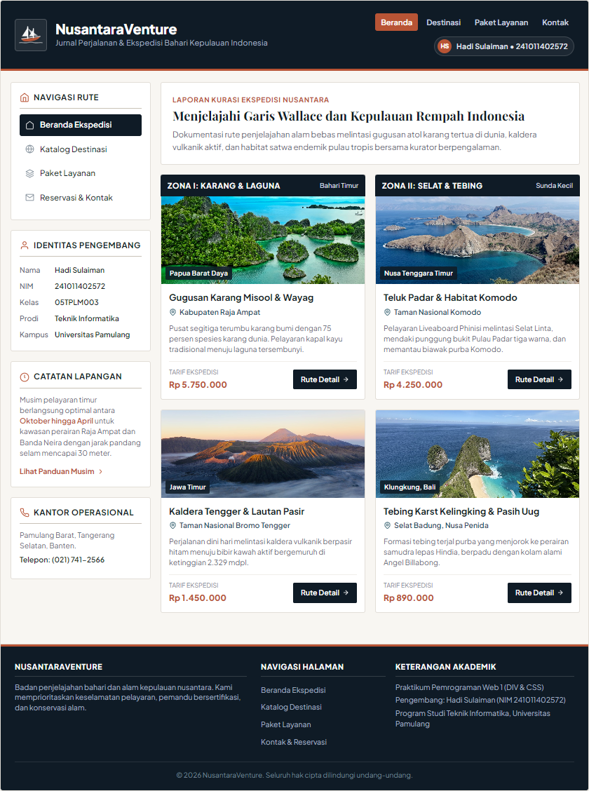

Tag <div> (singkatan dari division) adalah elemen tingkat blok (block-level element) serbaguna yang digunakan sebagai wadah (container) untuk mengelompokkan elemen-elemen HTML lainnya ke dalam bagian-bagian logis pada sebuah dokumen web. Elemen <div> tidak memiliki arti semantik intrinsik secara khusus, namun sangat krusial dalam arsitektur tata letak karena berfungsi sebagai fondasi utama di mana penataan gaya Cascading Style Sheets (CSS) diaplikasikan.
Dalam perancangan website terstruktur, halaman web umumnya dibagi menjadi empat zona fungsional utama, yaitu bagian atas (Header), bagian samping (Sidebar), area konten utama (Content), serta bagian penutup halaman (Footer). Seluruh bagian tersebut dibungkus di dalam sebuah kontainer pembungkus utama yang dinamakan Wrapper.
Setiap elemen pada peramban web direpresentasikan sebagai sebuah kotak persegi panjang yang mengikuti prinsip CSS Box Model, terdiri dari empat lapisan berurutan: Content, Padding, Border, dan Margin. Pengaturan properti box-sizing: border-box; sangat dianjurkan dalam desain modern agar nilai padding dan border tidak menambah ukuran total lebar elemen, sehingga mencegah kolom meluap (overflow) atau bergeser ke bawah.
Untuk meletakkan elemen <div> secara berdampingan (multi-column), digunakan teknik pengapungan properti float: left;. Agar elemen berikutnya (seperti Footer) tidak terpengaruh oleh aliran elemen yang mengapung, diperlukan pembersihan aliran menggunakan properti clear: both; atau memanfaatkan teknik clearfix modern (pseudo-element ::after dengan content: ""; display: table; clear: both;).
Perancangan website ini menerapkan standar desain visual berbasis materi riil (subject-matter grounding). Menghilangkan pola-pola generik seperti penggunaan karakter em dash yang berlebihan, ikon emoji gratisan yang tidak seragam, pil badge kapsul artifisial, dan gradasi warna neon yang tidak kontekstual. Sebagai gantinya, antarmuka mengadopsi identitas jurnal ekspedisi bahari nusantara dengan palet warna pigmen mineral alami (basalt lautan, kertas gamping, aksen terakota rempah) serta sistem ikon inline SVG berpresisi garis 1.5px.
Penugasan ini memiliki ketentuan penentuan tema, tata letak, dan ukuran CSS yang bersifat dinamis dan unik untuk masing-masing mahasiswa berdasarkan Nomor Induk Mahasiswa (NIM).
NIM Mahasiswa: 2 4 1 0 1 1 4 0 2 5 7 2
Digit Terakhir: 2
Lima Digit Terakhir (dari kiri ke kanan): 0, 2, 5, 7, 2
Berdasarkan tabel variasi penugasan, mahasiswa dengan digit terakhir NIM bernilai 2 mendapatkan tema dan susunan tata letak sebagai berikut:
| Digit Terakhir NIM | Tema Website | Layout Wajib | Implementasi Proyek |
|---|---|---|---|
| 2 | Travel Wisata | Header, sidebar kiri, content dua bagian, footer | Jurnal & Ekspedisi Kepulauan Indonesia (NusantaraVenture) |
Aturan khusus penugasan menyebutkan: "Jika terdapat digit 0, ganti menjadi 7 dalam perhitungan berikut." Karena lima digit terakhir NIM adalah 0, 2, 5, 7, 2, maka digit ke-1 bernilai 0 diubah menjadi 7.
| Posisi Digit | Digit Terhitung | Ketentuan / Rumus CSS | Proses Perhitungan Matematis | Nilai CSS Implementasi |
|---|---|---|---|---|
| Digit ke-1 | 7 (asli: 0) | Lebar wrapper = 700 + (digit × 20) px | 700 + (7 × 20) = 700 + 140 | width: 840px; |
| Digit ke-2 | 2 | Tinggi header = 80 + (digit × 10) px | 80 + (2 × 10) = 80 + 20 | height: 100px; |
| Digit ke-3 | 5 | Lebar sidebar utama = 15 + (digit × 2)% dari area utama | 15 + (5 × 2)% = 15 + 10% = 25% | width: 25% (200px / 210px); |
| Digit ke-4 | 7 | Jarak margin antarkolom = digit × 2 px | 7 × 2 px | margin-right: 14px; |
| Digit ke-5 | 2 | Tinggi minimum content = 200 + (digit × 20) px | 200 + (2 × 20) = 200 + 40 | min-height: 240px; |
Halaman beranda mengimplementasikan struktur tata letak DIV secara menyeluruh. Header memiliki tinggi tepat 100px dengan identitas mahasiswa dan logo resmi perahu Pinisi Nusantara. Pojok kanan atas memuat navigasi cepat menuju seluruh halaman (Beranda, Destinasi, Paket Layanan, dan Kontak) serta lencana identitas pengembang. Sidebar kiri menampilkan menu navigasi, identitas NIM, catatan musim pelayaran, dan kontak kantor operasional, dipisahkan oleh margin antarkolom 14px menuju area konten. Area konten dibagi menjadi dua kolom simetris yang menyajikan zona bahari karang dan zona selat vulkanik.

Berdasarkan praktikum dan perancangan website yang telah dilakukan, dapat diambil beberapa poin kesimpulan sebagai berikut:
<div> bersama dengan penataan gaya CSS berhasil membentuk arsitektur tata letak halaman yang presisi, modular, dan terstruktur sesuai rancangan desain editorial tingkat lanjut.